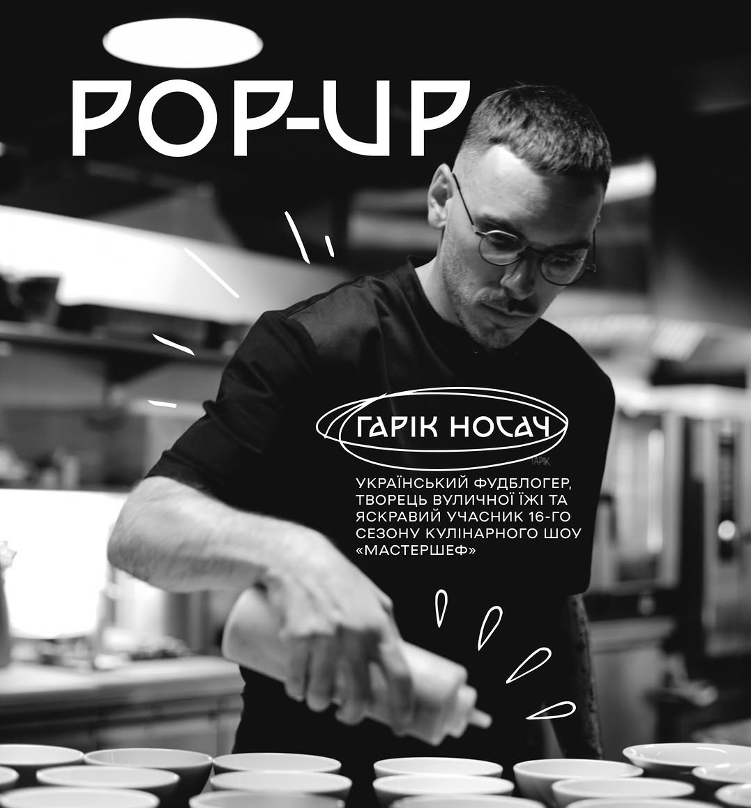
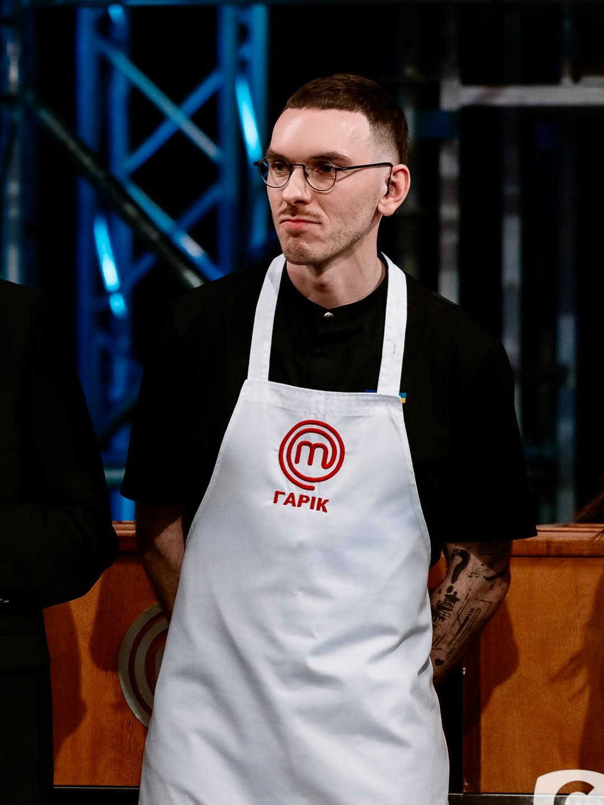

Pop-up вечері
Авторська вечеря на вашій локації: багатоденні резиденції з фіксованим сет-меню, анонсом для аудиторії та повним супроводом. Кейс: 4 дні в Івано-Франківську з авторським меню з чотирьох страв.
Для ресторанів, кафе, event-локацій

Фуд-креатор · Pop-up шеф · Топ-8 МастерШеф 16
Створюю їжу як контент і контент як їжу: авторські pop-up вечері у містах України, стріт-фуд концепції та фуд-історії для брендів. Їжа | Шлях | Трансформація.
Шлях

Естонець 🇪🇪 з Тарту, який знайшов себе в українській гастрономії. Десять років у фінтеху — від підтримки до CEO — і повний розворот після подорожей Японією та Кореєю: кухня, камери, pop-up вечері та вулична їжа. Мрія — власний ресторан у форматі омакасе.
«Я виграв не просто стажування — я виграв, без перебільшення, нове життя.»
Топ-8 шістнадцятого сезону кулінарного шоу «МастерШеф» (СТБ), творець вуличної їжі, Creative Chef кафе YUZU, амбасадор Umanpivo. Судді відзначали його роботу з рибою; Оля Мартиновська обрала його на стажування у своєму ресторані. На кітелі — два прапори: естонський і український. На тарілці — чесна їжа з характером.
Авторські страви від карпачо з запеченого буряка до чотирьох варіацій хот-догів. Висока кухня і стріт-фуд без снобізму — на одній вулиці.
Київ, Дніпро, Івано-Франківськ — pop-up формат, що мандрує містами. Кожна вечеря — нова кухня, нова команда, нові гості.
Історія кар'єрного розвороту, яку варто розповідати. Саме тому контент Гаріка дивляться: це не рецепти, це шлях у реальному часі.
Послуги
Формати, перевірені реальними проєктами — від чотириденних pop-up резиденцій до амбасадорства національних брендів.
Авторська вечеря на вашій локації: багатоденні резиденції з фіксованим сет-меню, анонсом для аудиторії та повним супроводом. Кейс: 4 дні в Івано-Франківську з авторським меню з чотирьох страв.
Для ресторанів, кафе, event-локацій
Обличчя і смак вашого бренду: амбасадорство, розробка страв під продукт, рецептурні інтеграції в контент. Серед партнерів — Umanpivo, Braun, Yaxell, Stozhar, Myastoriya, eat.me.at.
Для FMCG та фуд-брендів
Reels з повними рецептами до граму: авторська серія сендвічів, естонська класика з українським характером, інтеграції продукту прямо в рецептуру. Аудиторія 13K+, найкращі публікації — 17 тисяч вподобань.
Для брендів та медіа
Власна вулична кухня у Києві (Гончара 38А): щотижневі «поставки» — смеш-бургери, італійські пʼядіни, сатай на відкритому вогні. Плюс гостьові стріт-фуд колаборації, як-от чотири варіації хот-догів у Дніпрі.
Для фестивалів, івентів і колаборацій
Гастрономічна концепція закладу під ключ: дегустації, розробка меню, підбір посуду, запуск. Зараз — Creative Chef кафе YUZU (відкриття у серпні).
Для нових закладів
Гість-шеф на вашій події, спільні вечері з іншими шефами, участь у гастропроєктах. Досвід телевізійних зйомок — МастерШеф, 16 сезон.
Для подій та медіапроєктів
Галерея
Більше — щодня в @nosuch.garik.
Pop-up у вашому місті, амбасадорство чи контент для бренду — напишіть, обговоримо ідею.
Звʼязатися з Гаріком